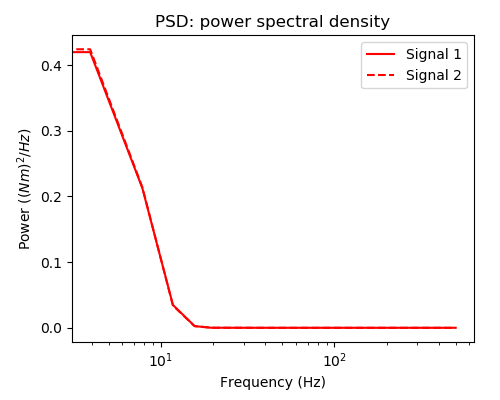

README.md for Figures Created on 2020/05/18 at 19:03.24 PST.
Notes
(Add Notes Here.)
Parameters
params = {
'Joint Inertia' : 0.0115,
'Joint Damping' : 0.0001,
'Joint Mass' : 0.541,
'Joint Moment Arm' : 0.05,
'Link Center of Mass' : 0.085,
'Link Length' : 0.3,
'Motor Inertia' : 6.6e-05,
'Motor Damping' : 0.00462,
'Motor Moment Arm' : 0.02,
'Spring Stiffness Coefficient' : 2.0,
'Spring Shape Coefficient' : 1000,
'Simulation Duration' : 15,
'dt' : 0.001,
'Position Gains' : {0: 3162.3, 1: 1101.9, 2: 192.0, 3: 19.6},
'Stiffness Gains' : {0: 316.2, 1: 25.1},
'Joint Angle Bounds' : {'LB': 1.5707963267948966, 'UB': 4.71238898038469},
'Maximum Joint Stiffness' : 650,
'Seed' : None,
'Filter Length' : 10,
'Pass Probability' : 0.00025,
'Input Bounds' : [0, 10],
'Low Cutoff Frequency' : 1,
'High Cutoff Frequency' : 10,
'Buttersworth Filter Order' : 9,
'Babbling Type' : 'continuous',
'Force Cocontraction' : True,
'Cocontraction Standard Deviation' : 0.5,
'Number of Nodes' : 15,
'Number of Epochs' : 10000,
'Number of Trials' : 45
}Figures
Figure 1: Caption for continuous_01-01.png.
Figure 2: Caption for continuous_01-02.png.
Figure 3: Caption for continuous_01-03.png.
Figure 4: Caption for continuous_01-04.png.
Figure 5: Caption for continuous_01-05.png.
Figure 6: Caption for continuous_01-06.png.
Figure 7: Caption for continuous_01-07.png.
 Figure 8: Caption for continuous_01-08.png.
 Figure 9: Caption for continuous_01-09.png.
Figure 9: Caption for continuous_01-09.png.
Appended on 2020/05/18 at 19:12.25 PST.
Notes
(Add Notes Here.)
Parameters
params = {
'Joint Inertia' : 0.0115,
'Joint Damping' : 0.0001,
'Joint Mass' : 0.541,
'Joint Moment Arm' : 0.05,
'Link Center of Mass' : 0.085,
'Link Length' : 0.3,
'Motor Inertia' : 6.6e-05,
'Motor Damping' : 0.00462,
'Motor Moment Arm' : 0.02,
'Spring Stiffness Coefficient' : 2.0,
'Spring Shape Coefficient' : 1000,
'Simulation Duration' : 15,
'dt' : 0.001,
'Position Gains' : {0: 3162.3, 1: 1101.9, 2: 192.0, 3: 19.6},
'Stiffness Gains' : {0: 316.2, 1: 25.1},
'Joint Angle Bounds' : {'LB': 1.5707963267948966, 'UB': 4.71238898038469},
'Maximum Joint Stiffness' : 650,
'Seed' : None,
'Filter Length' : 10,
'Pass Probability' : 0.00025,
'Input Bounds' : [0, 10],
'Low Cutoff Frequency' : 1,
'High Cutoff Frequency' : 10,
'Buttersworth Filter Order' : 9,
'Babbling Type' : 'continuous',
'Force Cocontraction' : True,
'Cocontraction Standard Deviation' : 0.5,
'Number of Nodes' : 15,
'Number of Epochs' : 10000,
'Number of Trials' : 45
}Figures
Figure 10: Caption for training_perf_01-01.png.